展示物一覧
エフェクター

良い音工房 Good Sound HP
良い音工房 Good Sound Xアカウント
バンドミュージックに欠かせない機材「エフェクター」
今回の展示ではエフェクター内部回路や各素子の役割の解説、およびこれまで自作してきた各種エフェクターの展示を行います。
音楽に興味がある人もない人も、一度ご覧下さい🎸
ビジネスホテルの壁に付いているカードを挿すと部屋の電気がつく"アレ"
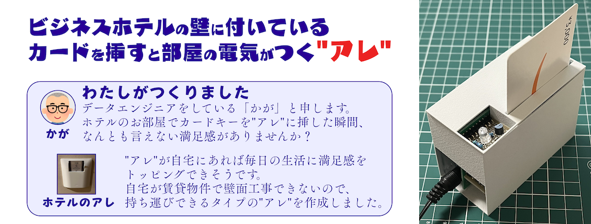※自宅の電灯を持ち込めないため"アレ"単体での展示となります
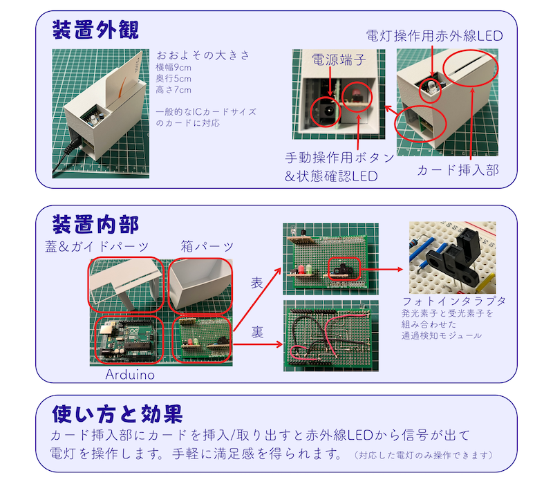動作風景

HDDを演奏する楽器
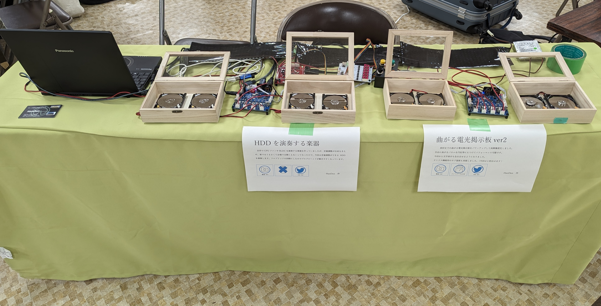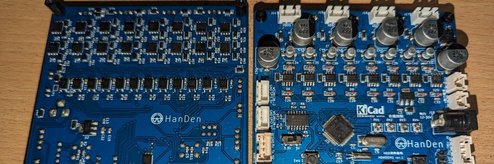
Xアカウント：@HanDen_motor
HanDen ブログ
少し昔のパソコンには多く入っていたHDD。
このHDDを改造するとなんと好きな音階を流せるようになります。
HDDの楽器自体はニコニコ技術部界隈などではn番煎じになりますが、
HanDenが作った楽器は駆動回路をフルブリッジにすることでヘッドの動きが大きいのが特徴です。
そして、ノートPC用の2.5インチHDDなのに大きなことが鳴ります。
ニコニコ技術部の一員として「技術の無駄遣い」をモットーに
今回も駆動部はディスクリート部品を使い限界まで詰め込んだ基板を作ってみました。
本来はもっと高出力なモータを駆動できる回路を使ってただHDDを演奏するだけの「無駄」がロマンです。
ネタ系作品に興味をもっていただけた方は、ぜひニコニコ技術部のイベント「NT○○」で何かを作って展示してください！
(最近は若い人が減ってきているので学生さん大歓迎です！）
https://wiki.nicotech.jp/nico_tech/index.php
数学模型


元Twitter（現自称X）アカウント：@Hyrodium
YouTube：@Hyrodium
Booth：@Hyrodium
GitHub：@Hyrodium
個人サイト：hyrodium.github.io
数学に関連した関連の模型を展示します。 主にレーザー加工機を使っています。
水中ドローン
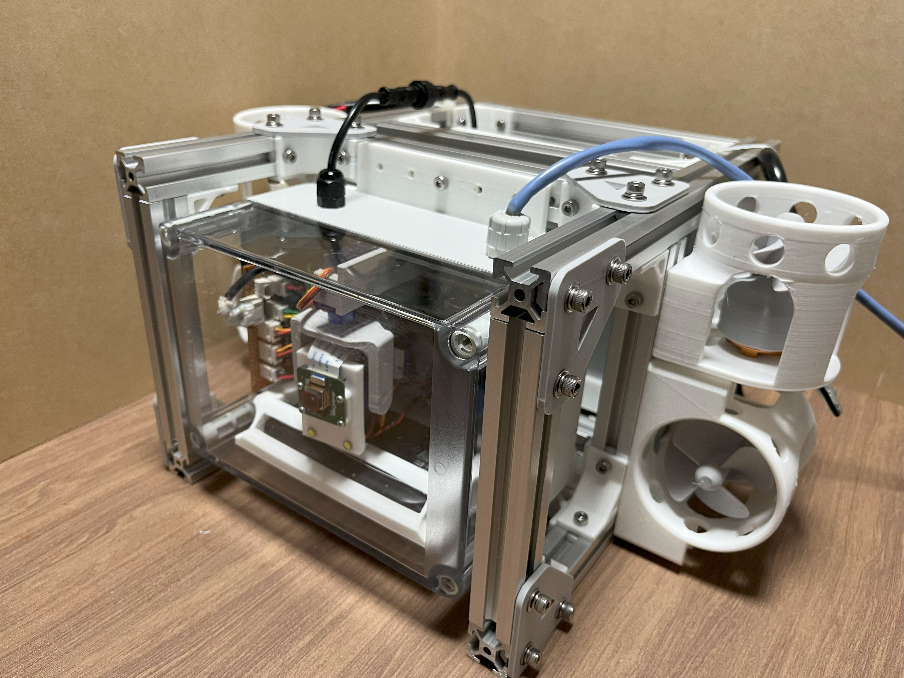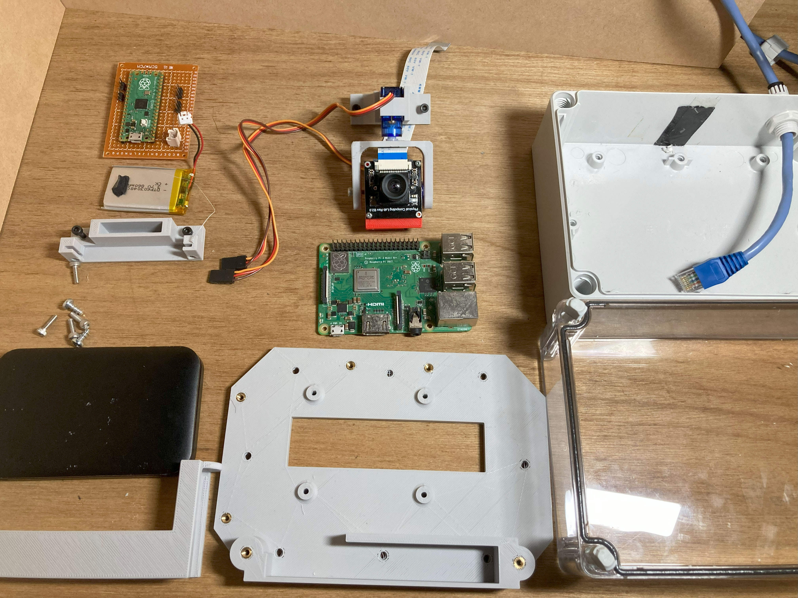
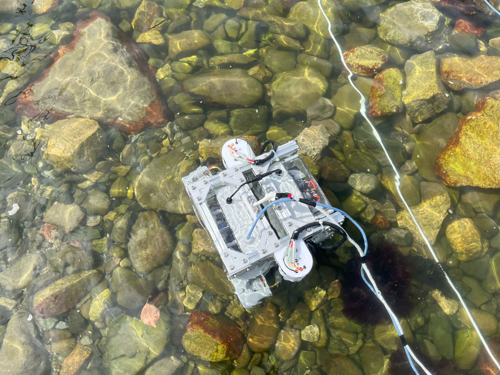
海底とか川底が見たくて、３Dプリンタやレーザー加工機などをフル活用して水中ドローンを作りました！
プロペラから制御S/Wまで、すべて設計から組立まで自力で作っています。
持ち運べる程度のコンパクトさと、メンテナンス向上のための各部品のモジュール化設計に力を入れました。
実際に川や海に沈めた映像もあるのでどうぞ！
Freefall Display
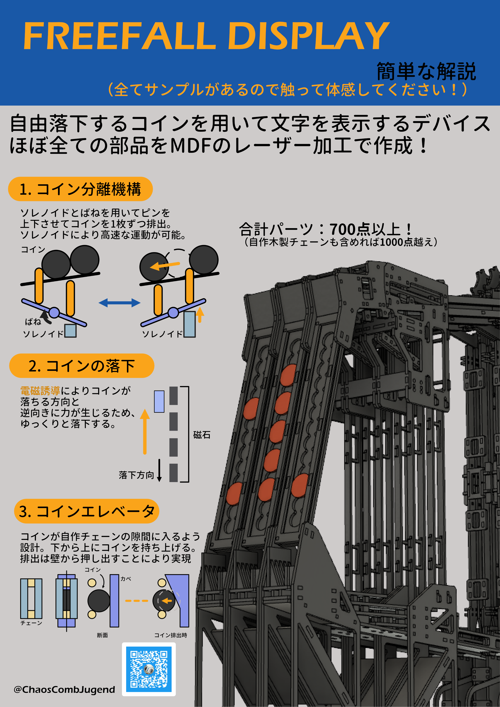
滑り台を下るように上から落下する一円玉の落下タイミングを制御することで文字を表示するデバイス「Freefall Display」を展示します。
ソレノイドにより一円玉の落下タイミングを制御し、電磁誘導で落下速度を小さくすることで表示を可能にしています。
また、作品の機構、仕組みや作成プロセスを解説する展示も行う予定です。
レーザー加工により切り出されたパーツから生まれる作品の構造美にも注目してください。
授業教材や絵本
私は高校で工業科目の教員をやっています。そこで、授業教材として作ったものや、息抜きに趣味として製作したものを展示させていただきます。
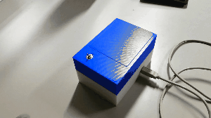
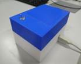
役に立たないロボット（セルフキルロボット）
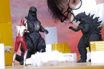
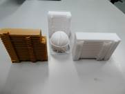
1/655スケールのマンションやビル（３DCAD・３DP作品）
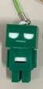
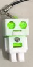
３DPで製作したキーホルダー
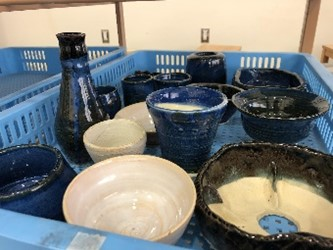
陶芸部での製作物（ろくろ・てびねり）
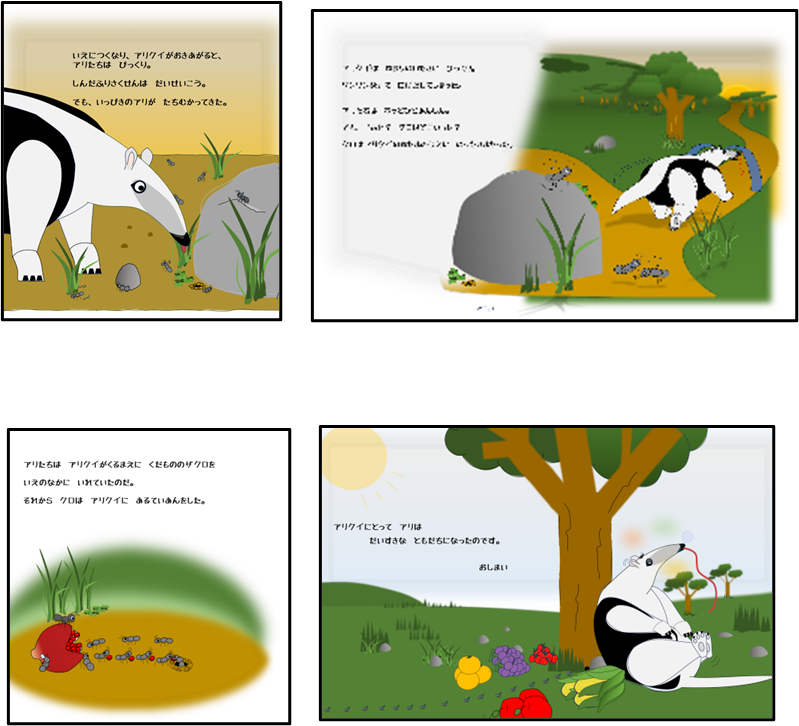
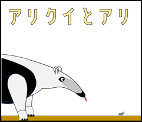
高専で培ったパワポ技術で製作した絵本
ペンネーム：いろはに えいびし
スピーカーと移動ロボット

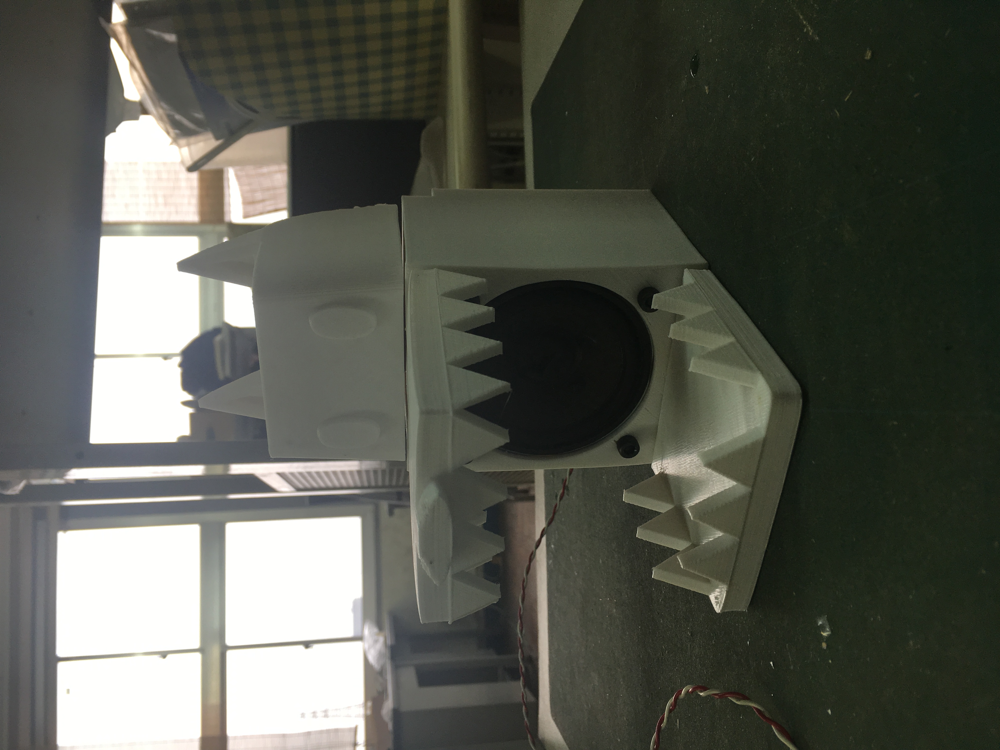
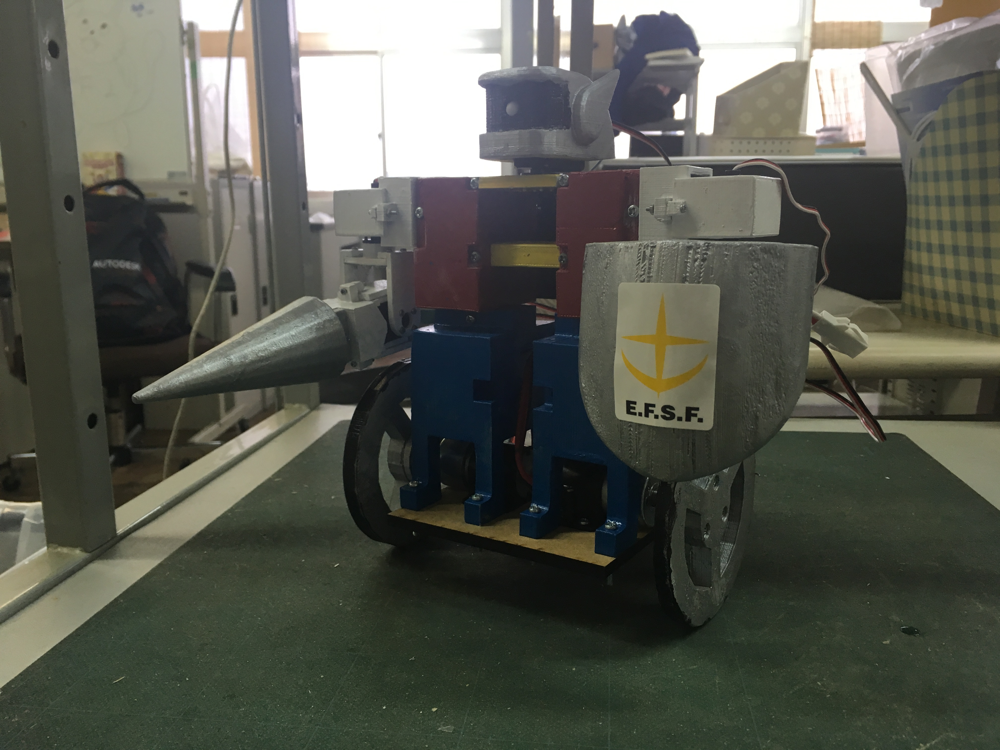
学生時代に3Dプリンタを使って作ったスピーカー（厳密にはエンクロージャー）とロボットです。
ロボットが動くかどうかはこれからの頑張り次第